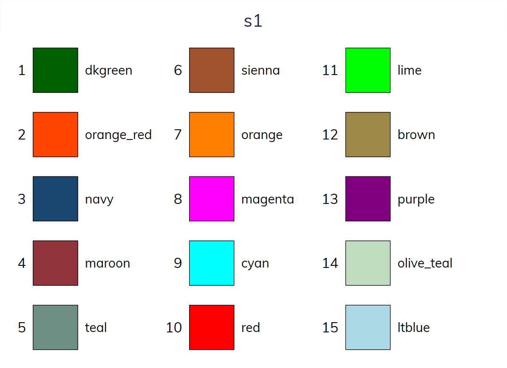
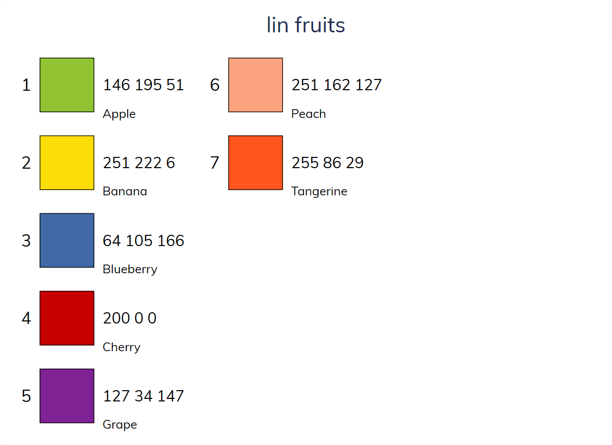
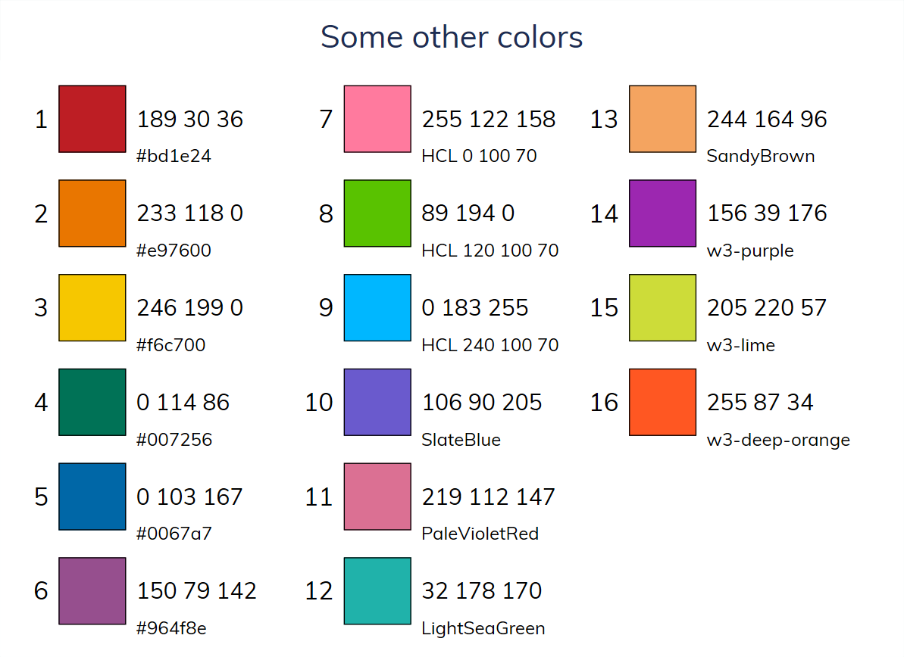

Color Names
. colorpalette s1

. colorpalette lin fruits

. colorpalette blue bluishgray brown cranberry cyan dimgray dkgreen dknavy ///
> dkorange eggshell emerald forest_green gold gray green khaki lavender ///
> lime ltblue ltbluishgray ltkhaki magenta maroon midblue midgreen mint ///
> navy olive olive_teal orange orange_red pink purple red sand sandb ///
> sienna stone teal yellow ebg ebblue edkblue eltblue eltgreen emidblue ///
> erose, title(Named colors)

. colorpalette #bd1e24 #e97600 #f6c700 #007256 #0067a7 #964f8e ///
> "HCL 0 100 70" "HCL 120 100 70" "HCL 240 100 70" ///
> SlateBlue PaleVioletRed LightSeaGreen SandyBrown ///
> w3-purple w3-lime w3-deep-orange, title(Some other colors)
